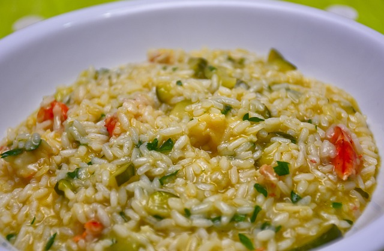

Risotto
Although not authentically Italian, this assembled recipe tastes delicious. Try it out for yourself!

Ingredients
- Carrots
- Peas
- Cherry tomatoes
- Onions
- Garlic
- Arborio rice
- Broth
- White wine
- Parmesan cheese
- Sage
- Almonds
Steps
- Warm the oven to 200 C, set to fan.
- Mix the cherry tomatoes with olive oil, garlic, salt, pepper and sage. Bake in the oven for 30-40 minutes until the tomatoes are well baked.
- Meanwhile, caramelize the onions and garlic.
- Add the carrots and rice, bake shortly and deglace with white wine.
- Keep adding the broth in batches until the rice is cooked and keep the fire on a simmer.
- Brown the almonds in a pan.
- Add the peas to the risotto and stir them through the risotto.
- Place the oven-baked tomates on top and finish with the almonds and grated parmesan cheese.
More delicious recipes...